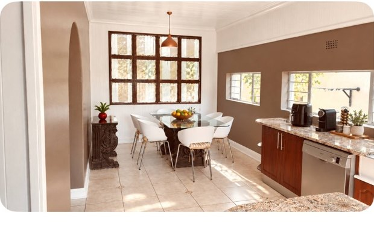
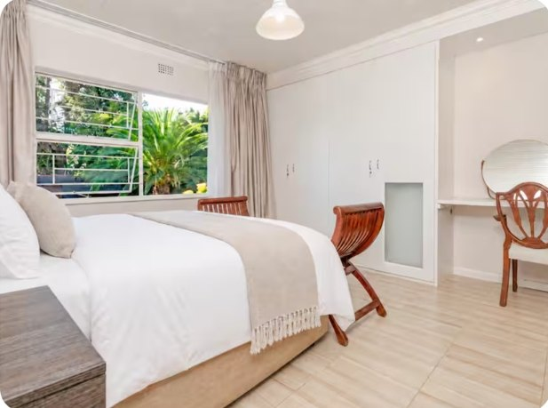
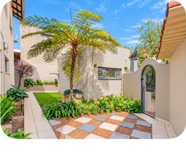
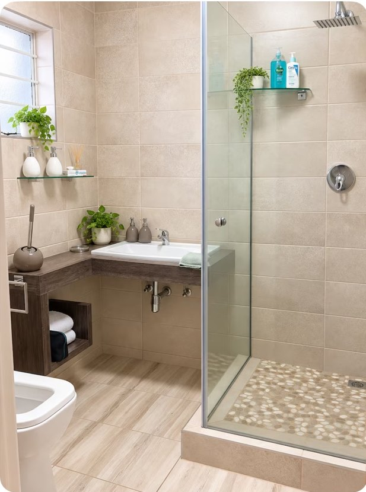
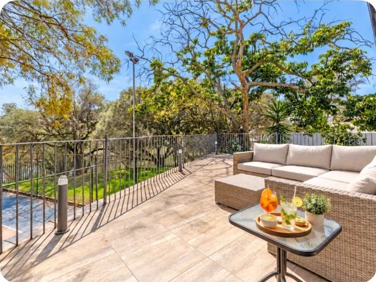

We're so glad you're here.
Welcome to your home away from home. We hope your stay is comfortable, restful and full of lovely memories. This little guide has the essentials you'll need.
House guide

Arrival and parking
Check-in: 2:00 PM–6:00 PM. A garage remote and key will be handed to you on arrival. Please park your vehicle inside the garage. Parking outside is at the vehicle owner's risk. Please close the garage securely when leaving.
House rules
We are in a quiet residential neighbourhood with other families, so please keep noise at a considerate level, especially in the evenings and early mornings. No parties, large gatherings or pets are permitted.
No smoking inside the home or on the terrace. Please care for the furniture and fittings as you would in your own home.
Kitchen, rubbish and cleaning
The kitchen has a dustbin inside the lower cabinet to the right of the sink. Additional rubbish bins are outside the kitchen area; please use them when disposing of household waste.
Dishwasher: A simple dishwasher is available in the kitchen for guests to use. Please use it with care.
Basic cleaning equipment is provided. We appreciate you keeping the home reasonably tidy.
Linens and laundry
Fresh bedding, towels and toilet paper are provided. A simple washing machine is available for guest use in the garage. Please switch it off when finished.
Water and electricity
Water pressure in central Johannesburg can vary with municipal supply and demand. Thank you for your understanding if the flow is lower at times. If there is no water at all, please message your host through Airbnb.
The home does not have a backup generator in the event of a power outage.
Outdoor terrace
You're welcome to enjoy the terrace and outdoor seating. Please keep noise down to respect nearby families. Smoking is not permitted on the terrace.
A little look around




Explore nearby
Whether you're in the mood for a relaxed meal, some fresh air or a little shopping, here are a few places around Johannesburg to explore.
Parks & nature
Beautiful gardens and green lawns for an easy stroll or picnic.
Get directions ↗A lovely spot for waterside walks and birdwatching.
Get directions ↗Hiking, city views and local heritage; check opening days and access before visiting.
Get directions ↗Food & cafés
A relaxed Italian restaurant in Melville, known for pizza and pasta.
Get directions ↗Pizza and Italian comfort food in a welcoming setting.
Get directions ↗Shopping & essentials
A nearby option to look up for everyday basics; confirm the shop and hours before heading out.
Get directions ↗A larger centre for groceries, shops and everyday errands.
Get directions ↗Please check current opening hours and access arrangements before setting off. For getting around Johannesburg, consider travelling by car or a reputable ride-hailing service, especially after dark.
Checkout
Please collect your belongings, leave the house reasonably tidy, make sure the doors and garage are secure, and return the keys and garage remote as instructed by your host.
Thank you for staying with us. Safe travels!
Contacts & emergencies
Your host: Please send messages through the Airbnb messaging platform.
Emergency: In South Africa, 112 can be dialled from a mobile phone for emergency help.
For property-related questions, please contact your host through Airbnb. For urgent emergencies, contact emergency services.